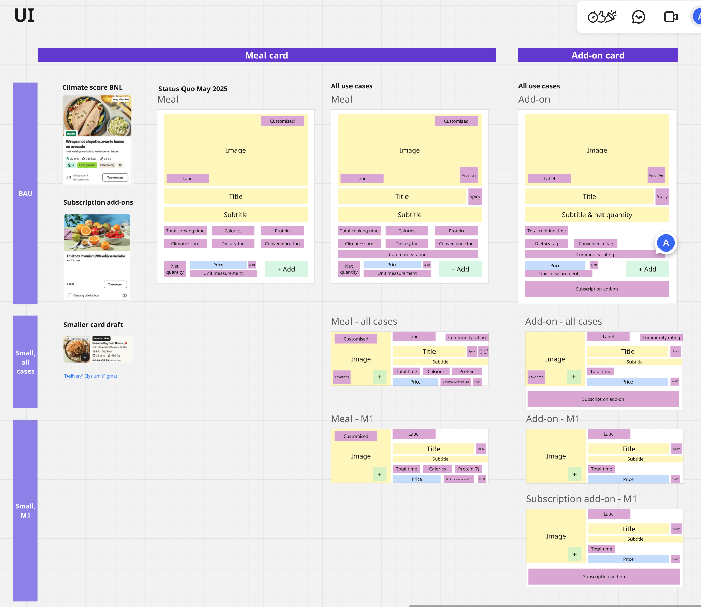
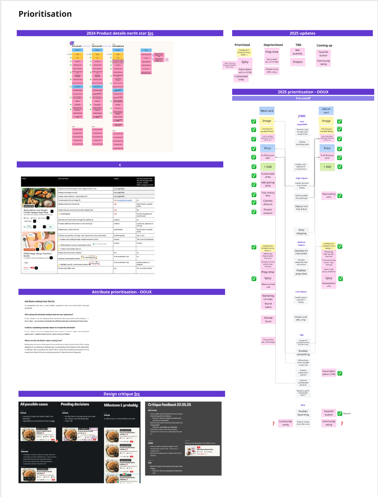
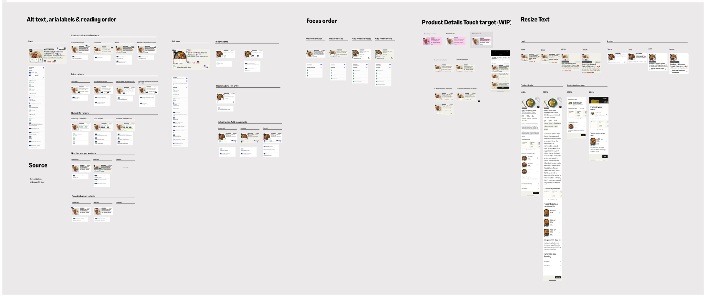
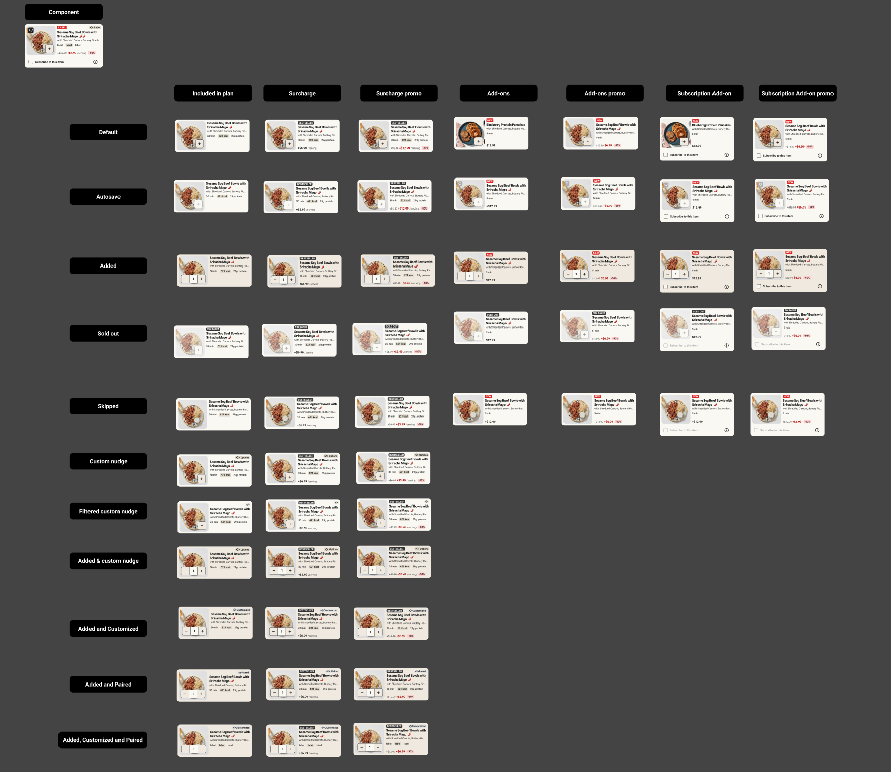
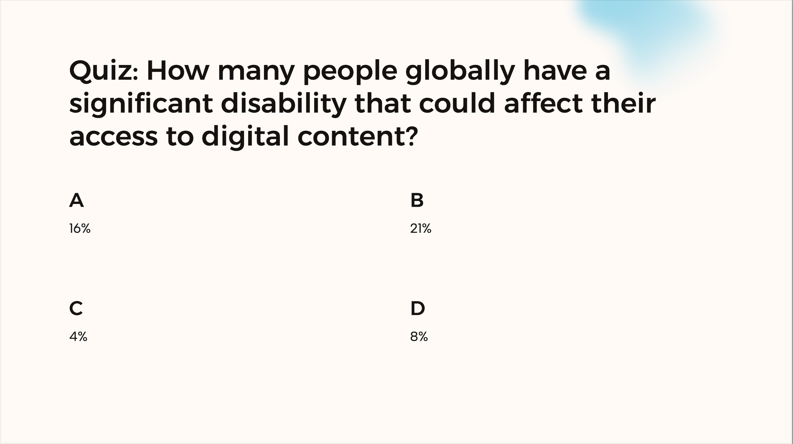

The Challenge
This work was part of a larger store UI update to improve browsability for a growing assortment. The existing product card had grown unwieldy—new elements added over the years without revisiting the layout left it with inconsistent aesthetics and a height that required scrolling to see a single card on smaller devices. As the core component of the store, where every meal added to an order starts, it needed a redesign.
The company was consolidating its brand platforms, meaning all new components had to work across brands from the start. This was the first release to span both mealkit and ready-to-eat—each with fundamentally different product attributes.
My Role
I replaced another designer mid-project, picking up after usability testing had already validated a horizontal card layout over a grid layout.
I was brought onto this project because of my previous work on the checkout, where I'd redesigned cart line items to surface product card attributes. That work gave me deep familiarity with the many meal selection variants and which information best helped customers make decisions.
I partnered with the Design System team to create a modular, accessible product card using Object-Oriented UX principles, ensuring the component met design system standards and could be maintained long-term. This was HelloFresh's first design-led accessibility implementation, and I ran knowledge sharing sessions so the team could replicate the approach on future projects.
Different Products, Different Attributes
Previously, multi-brand components only needed to work across mealkit brands—which share the same product attributes. Factor (Ready-to-Eat) changed everything:
Mealkit Products
- Cooking time and prep time
- Recipe steps and ingredients
- Serving size customization
- Spice level indicators
- Dietary tags (vegetarian, gluten-free)
Ready-to-Eat Products
- No cooking required
- Protein and calorie focus
- Different dietary attributes
- Subscription add-on options
- Bulk buy variations
OOUX: Object-Oriented UX
To solve this complexity, I used Object-Oriented UX to map all product types and their attributes. This involved:
- Object mapping: Identifying all product types (meals, add-ons, subscriptions) and their relationships
- Attribute prioritization: Aligning with product on Jobs to be Done to determine what information is essential vs. optional
- Modular design: Creating a component architecture that could flex based on content type

OOUX object mapping: defining product card structure for meals and add-ons

Attribute prioritization aligned with Jobs to be Done research
EAA Compliance
The European Accessibility Act (EAA) — Directive (EU) 2019/882 — became fully applicable on June 28, 2025. This meant our designs had to meet WCAG 2.1 AA standards.
This deadline shaped the project timeline and made accessibility a core requirement from the start.
To understand what this meant in practice, I audited the existing meal selection experience using VoiceOver on my iPhone and MacBook. Learning the gestures and keyboard controls helped me grasp the gap between the visible UI and how screen readers actually interpret elements—it was eye-opening, and shaped every decision that followed.
Design Decisions
Screen readers don't follow visual layout—they read elements in the order they appear in the code. Without deliberate structuring, this may not match the order users actually need. I used the OOUX attribute prioritization to define reading order, ensuring screen reader users received information in the same hierarchy as sighted users: product name first, then key attributes, then price.

WCAG requires content to work at 200% text size, and device analytics showed users browse on screens as small as 360px. Rather than truncating text—which cuts off meaning for users who need larger text or smaller devices—I defined character limits for every element and benchmarked Lieferando's approach of switching to vertical layouts at larger sizes.
Alt-text and ARIA labels aren't just technical metadata—they're the entire experience for screen reader users. I collaborated with UX Writing to ensure labels conveyed meaning, not just described elements ("Select Chicken Teriyaki" vs "Button").
The final component is a modular system with 50+ variants covering all states and brand configurations:

The complete product card component library with 50+ variants
Knowledge Sharing
I presented my process and recommendations to the UX design and research team, covering VoiceOver testing, annotation workflows, and WCAG requirements. I followed up with one-on-one mentoring sessions to help designers apply accessible design practices to their own projects.

Factor Launch
In Q4 2025, the product card component launched on Factor (Ready-to-Eat) across 7 markets: US, CA, DE, NL, BE, SE, and DK. We rolled out without an experiment because Factor's outdated UI could no longer support new features—updating it was a prerequisite for planned platform improvements.
HelloFresh Experiment
In Q1 2026, we A/B tested the new product card on HelloFresh. Mixed results led us to iterate—we rolled back with a plan to re-test.
I'm currently working on the next iteration, with a new experiment planned for Q2 2026.
What I Learned
OOUX enables accessibility. The attribute prioritization exercise I did for UX design directly informed the reading order and focus order for screen readers. Good information architecture supports both visual and non-visual users.
Process documentation matters. By documenting the accessibility workflow, I created a repeatable process for the team. The presentation has been referenced on subsequent projects.
Experiment insights are valuable even when rolled back. The HelloFresh experiment showed that information density matters more than we assumed. Users need dietary tags and descriptions to evaluate products—they can't make decisions without them. This validated our OOUX prioritization and is informing the next iteration.